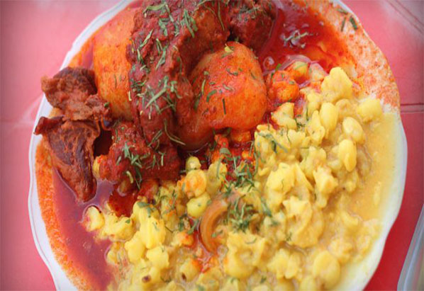

Mondongo
Ingredientes
- 1-l/2 kilo de costilla o chuleta de cerdo
- 12 lonjas de cuero de cerdo
- 4 cucharadas de ají colorado
- 1 kilo de maíz pelado
- 6 papas peladas
- 2 dientes de ajo
- 1 cucharilla de palillo
- perejil picado
- aceite sal, pimienta y comino
Preparación
Cortar el cerdo en trozos, poner sal, pimienta y comino. En una olla con agua poner a cocinar la carne, dejar hasta que el agua se evapore y dore en su misma grasa. Aparte calentar el mote.En una sartén con aceite freír el ají, los ajos, sal, pimienta, comino y agregar el cerdo. Añadir un cucharón del agua donde se cocinó el cuero de cerdo y dejar al fuego por unos min. En una sartén con aceite y palillo echar el mote, el cuero picado y mezclarlo. Servir la carne con la papa rociada con el ají colorado, el mote, el cuero y perejil encima.